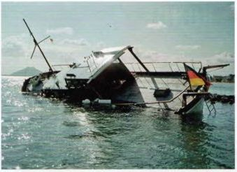

Als Havarie bezeichnet man jeden Schaden am Boot, der das fahrverhalten stark beeinträchtigt oder eine unmittelbare Gefahr für Boot und Besatzung neraufbescnn Ctt Wie bei jedem Unfall sind zuerst d e Menschen außer Gefahr zu bringen, beziehungs • weise Verletzte zu bergen und zu versorgen Oie Pflicht zur Hilfeleistung gilt selbstverständlich auch dann, wenn man nicht selbst in eine Havane verwickelt, sondern nur Zeuge ist. ledern Havaristen ist rach bestem Können Hilfe am Unfallort zu leisten, und zwar so lange, bis weiterer Beistand nicht mehr erforderlich ist. ihre Grenzen hat die Hilfe den, wo man das eigene Boot oder seme Besatzung gefährden wu'de
Nach einem Zusammenstoß oder einer schweren Grundberuh-ung sofort feststellen, ob das Boot Wasser macht. Bei einem stärkeren Wassereinbruch unverzüglich Kurs aufs nächste Ufer nenmen, das Boot so hoch wie möglich auf land setzen und mit leinen oder Anker sichern. Danach sind mit den Unfall beteiligten alle erforderlichen Daten auszutauschen
Nach e>ne- Kollision mit einem anderen Schiff ist sofort ein Havanebencht niederzuschreiben mit Name. Heimathafen und Schiffstyp des Kollisionsgegners, Uhrzeit, Ort (Flusskilometer), Sicht. Wetter und Personalien der Beteiligten und Zeugen.
Zur Grendberuhrung im normalerweise freien Fahrwasser kann es kommen, wenn dort irgendetwas Unbekanntes versenkt oder eingespult ist. Auch wenn kein Schaden am Boot entsteht, unbedingt sofort die Wasserschutzpolizei oder die Wasser- und Schiff fahrtsverwaltung verständigen und Angaben zur Hindernisstelle machen, damit das Hindernis beseitigt oder zumindest markier*, werden kann.
HOCH UND TIEF
Die Erdkugel ist von einer Lufthülle umge Sen. Sie wurde gleichmäßig .erteilt au‘ der Erdoberfläche lagern und ungest C-t die Erddrehung nvtmachen, wenn ihr Gewicht - die luftdichte - sich nicht durch Erwarmung und Abkühlung andern wurde. Erwärmte Luft dehnt sich aus. Sie Ste g: auf und wird leichte'. der Luftdruck cementsp-echend med nger. So entsteht ein Tiefdruckgebiet, kur: Tief (T) genannt.
Kalte lu*t dagegen zieht sich zusammen, wird schwerer und erzeugt einen hohen Druck auf die Erdoberfläche. Es entsteht ein Hochdruckgebiet, kurz Hoch (H) genannt.
► Etn Tief bildet sich über Raumen, die starke- erwärmt sind als die umliegenden Gebiete.
► Em Hoch bildet sich über Raumen, die starker abgekuhlt sind als die umliegenden Gebiete.
Die Hochs und Tiefs liegen, allerdings nicht lest. Sie verlagern sich mehr oder weniger schnell und folgen gewissen charakteristischen Zugbahnen.
Die landläufige Meinung, ein Hoch bedeute stets schönes Wetter, ist nur teilweise richtig Sur m Kern und auf der Rückseite ist gutes Weiter zu erwarten. An seiner Front bleibt es meistens schlecht.
Der zwischen Hocn und Tief bestehende luft-druckunterschied gleicht sich aus, indem schwere Luft m das Gebiet mit leichterer Luft strömt. Diese luftbewegung ist der Wind Je dientet Hoch und Tief Zusammenlegen und >e großer das luftdruckgefaile zwischen ihnen Ist, umso Starter weht der Wind. Auf der wohl ,edem geläufigen Wetterkarte verbinden sogenannte Isobaren alle Orte gleichen Luftdrucks
► liegen die Isobaren eng beieirund«, ist das Druckgefälle groß, und es wird start wehen.
► liegen die Isobaren weit auseinander, ist das Druckgefälle gering, und es ist allenfalls mit leichten winden zu rechnen.
Die E'dd-ehung bewirtt, dass auf der nördlichen Halbkugel die .uft gegen den Uhrzeigersinn spiralförmig ins Tief einstromt, aus dem Hoch aber im Uhrzeigersinn spiralförmig ausstromt Auf der südlichen Halbkugel geschieht es entgegengesetzt
Die Hohe des lufld'ucks, gemessen in Hektopascal (h Pa), zeigt das Trometer an Allerdings sagt der augenblickliche Barometerstand über die Weiterentwicklung kaum etwas aus. Erst aus den Luftdruckschwankungen lassen sich gewisse Schlüsse ziehen. Im Allgemeinen gilt
» Gleich bleibender oder langsam ansteigender Luftdruck verspricht eine Schönwetterperiode.
► Stetig fallender Luftdruck kündigt schlechtes Wetter an, schnell fallender meist Sturm.
Die Windgeschwindigkeit wird in Meter pro Sekunde (m/s), Kilometer pro Stunde (km/h). Kneten (kn - Seemeilen pro Stunde) oder >n Beaufort (Bft) gemessen. Die Beaufort-Skala teilt die Wmdgeschn ndigkeit nach der Auswirkung au'See und land in I? geschätzte Startegrade ein.
